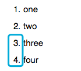
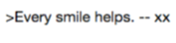

Markdown Note
Markdown allows you to write structured content, and convert it to HTML.
Two ways to create a Markdown note:
- Create an empty note, and rename it as "xx.md".
- Create a Markdown note by clicking "New Markdown Note".

Know the following Markdown skills before editing (save and see the effect):
- Ordered list: start every line with "No. " (a space after ".").
Before After  - Unordered list: start every line with "-" or "*" (a space after "-" or "*").
Before After 
- Bold, italic or strikethrough: add "**", "*" or "~~" before and after words.
Before After - Citation: add ">" before words (space or no space).
Before After  - Footnote: add "[^1]" after words and "[^1]: " before (a space in the latter).
Before After 
Note: Don't forget to synchronize your notes after editing.
Go to ,and click "Options" to set how you would like to synchronize your notes: